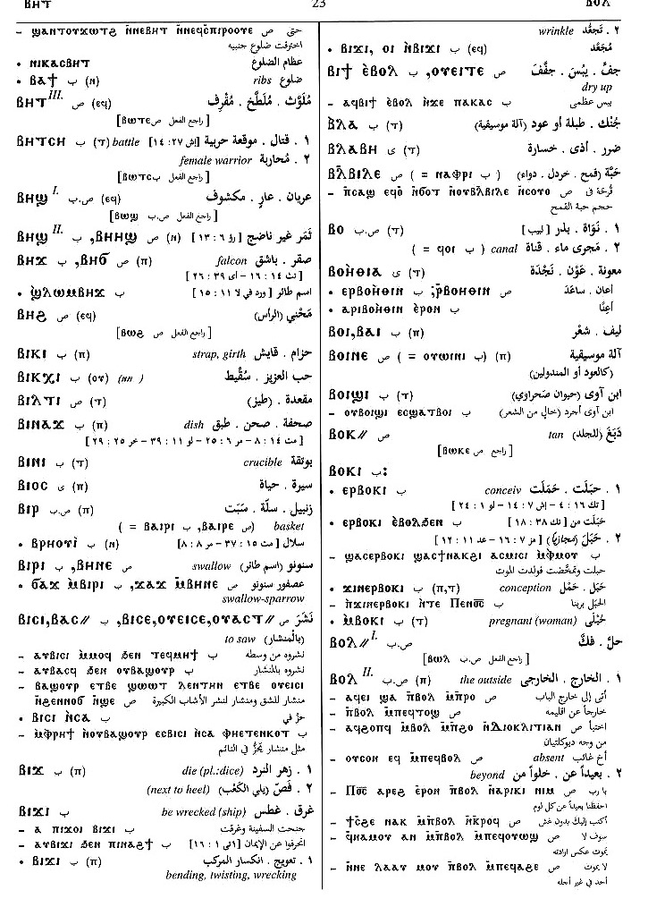

(verb)
intr: waste away, dry up [τηκειν]
(S)
ⲟⲩⲉⲓⲧⲉ,
ⲟⲩⲉⲉⲧⲉ
(S, A) ⲟⲩⲓⲧⲉ
(S) ⲃⲓⲧⲉ
(B) ⲃⲓϯ
(F) ⲟⲩⲉⲓⲧⲓ
(S, A) ⲟⲩⲓⲧⲉ
(S) ⲃⲓⲧⲉ
(B) ⲃⲓϯ
(F) ⲟⲩⲉⲓⲧⲓ
| intr :6963 | Crum: 495a | ||||||||
| ⲉⲃⲟⲗ (c) | sim
― intr: ― tr: S6964 |
||||||||
See also:
| view | (S) ϣⲟⲟⲩⲉ (Sf) ϣⲁⲩⲉ, ϣⲁⲟⲩⲉ (Sf, A) ϣⲉⲩⲉ, ϣⲉⲟⲩⲉ (sA) ϣⲁⲩⲉⲓⲉ (B) ϣⲱⲟⲩⲓ (F) ϣⲁⲩⲉⲓ | (verb) intr: be dry
[ξηραινειν]
qual: dry, stale [ξηραινειν, ξηροσ]412 |
Crum: 495

495
Dawoud: 23b

23